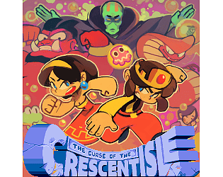

|  | |
| Tempo de jogo | Não Jogado |
| Última Atividade | Nunca |
| Adicionado | 04/04/2025 0:19:55 |
| Modificado | 04/04/2025 0:21:51 |
| Status de Conclusão | Not Played |
| Biblioteca | Itch.io |
| Fonte | itch.io |
| Plataforma | PC (Windows) |
| Data de Lançamento | 21/08/2015 |
| Pontuação da Comunidade | 60 |
| Avaliação da crítica | |
| Pontuação do Usuário | |
| Gênero | Adventure Indie Platform |
| Desenvolvedor | Adam Mowery |
| Editor | Adam Mowery |
| Funções | Multiplayer Single Player |
| Links | Steam Official Itch Twitch |
| Tag | [GGDeals] Synced |
A curse has befallen the Crescent Isle and it's up to you to save them. Luckily the curse has transformed your people into helpful monsters such as drills, blobs, icicles, and gravity flipping...things. With your monster subjects in hand you'll have to drill through rocks, maneuver through spiky terrain, freeze water to pass over the sea, and restore your kingdom to its former glory.
Key features:
--Credits--
COVER ART: TEMMIE CHANG -https://twitter.com/tuyoki
COMPOSER: DANIEL DAVIS - https://twitter.com/an0va
ARRANGER: STEVE LAKAWICZ -https://twitter.com/a_p_0_c
GRAPHICS: MICHAEL LAMBERT -https://twitter.com/Jakten
DESIGN & PROGRAMMING: ADAM MOWERY - https://twitter.com/1amowery